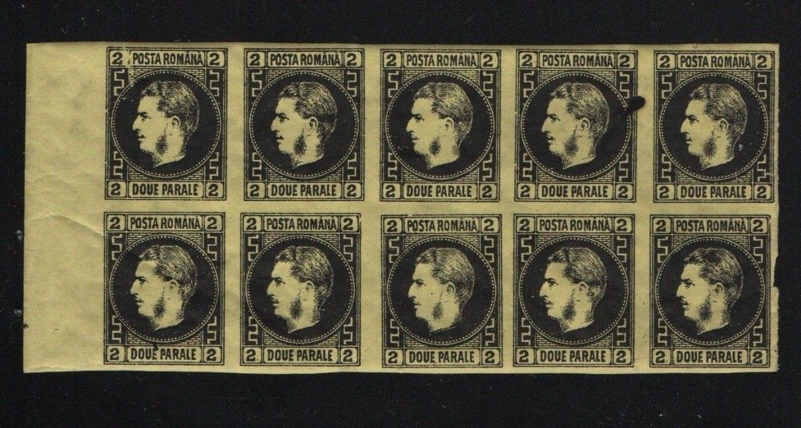
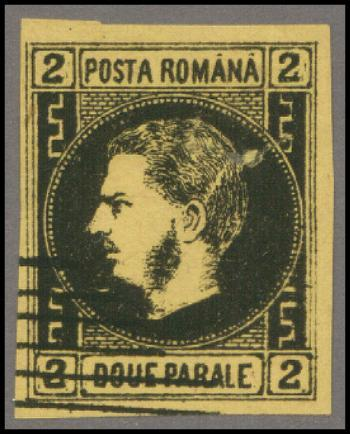
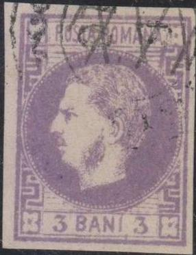
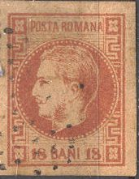
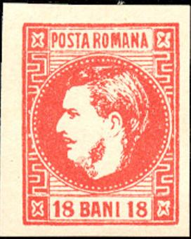
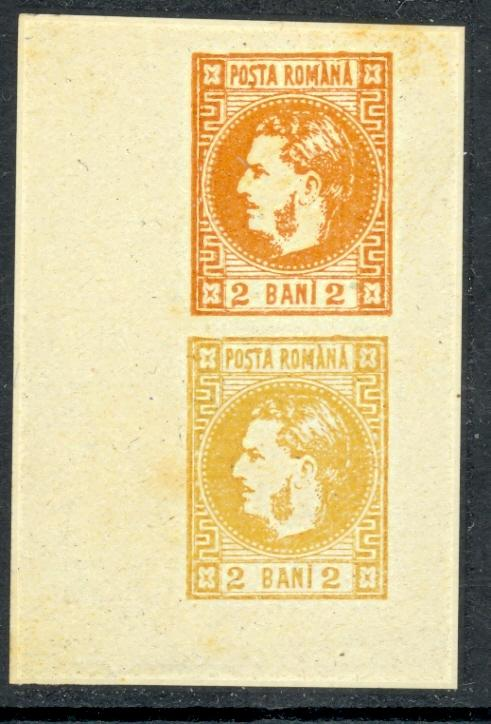

Return To Catalogue - Rumania - Cancels on stamps of Rumania
Note: on my website many of the
pictures can not be seen! They are of course present in the
catalogue;
contact me if you want to purchase it.
For stamps of Rumania, issued earlier, click here.
2 p black on yellow 5 p black on blue 20 p black on lilac
For the specialist: there are two types of the 20 p, type I with the zig-zag line on the right hand top side begins from below the '2', and type II where it starts from below the '0'. Types I and II were printed on the same sheet and can be found se-tenant.
Value of the stamps |
|||
vc = very common c = common * = not so common ** = uncommon |
*** = very uncommon R = rare RR = very rare RRR = extremely rare |
||
| Value | Unused | Used | Remarks |
| 2 p | *** | *** | |
| 5 p | RR | RRR | |
| 20 p | *** | *** | |
Genuine stamps have the following characteristics according to
'Distinghuishing Characteristics of Classic Stamps, Europe - 19th
Century, (except old German States) by Hermann Schloss':
* Both letters 'A' of 'ROMANA' have accents over them, in the 2 p
and 5 p values these accents touch the frame line, however, in
the 20 p value they don't
* The ear should have three shade lines in it.
Types:
Apparently two sets (thin and thick paper) with different cliches were used.

For the 2 parale:
Type 1: two breaks in the left outer frameline.
Type 2: Small dot in the yellow line below the upper right '2'
(just above the Greec ornament).
Type 3: Yellow dot in the upper right part of the 'A' of 'POSTA'.
Type 4: dot in front top left of 'D' of 'DOUE' and sometimes a
hole in the circle next to the lower left Greec ornament.
Type 5: A dot appears behind the lower left '2'.
Type 6: A hole in the frameline above the 'PO' of 'POSTA' and a
line below the neck of the King.
Thin paper 20 pa; type 4; line in front of the 'P' of
'POSTA' and scratch on top of the 'N' of 'ROMANA'.
Forgeries:
First forgery (Spiro/Fournier)

(Angry Carol, sorry: bottom part missing in the 20 pa value)
Forgeries exist, some of them are described in 'The Spud Papers I'. One forgery is known as 'angry Carol' since the King looks rather angry. I've seen all three values. I know that Fournier sold this forgery (I think it was actually made by Spiro). Note that the zig-zag line on both sides is not wide enough. Note the typical bogus cancels on these forgeries.
Page from a Fournier Album. Note the different type at the
bottom.
Second forgery
In the above forgery the zig-zag line on both sides is very thick. The head of the 'S' of 'POSTA' is small, there are also differences in the other letters. The face of the king looks as if it is slanting backwards (compared to a genuine stamp). Next to it a forgery of the 1869 issue probably made by the same forger.


The 'S' of 'POSTA' is too rounded at the top, the King has a
moustache, the wrinkle and the eye are united. A similar forgery
exists of the 2 pa and 5 pa values. See also next image:

Forgery of the 5 pa. The 'S' of 'POSTA' is slanting backwards and
its head is too rounded. The head of the king is also slanting
slightly backwards. There is too much shading in the beard.
Straight under the second 'A' of 'ROMANA' there should be the
division of two 'bricks'. However, in this forgery, one brick
extends for the full length of the 'A'. The lettering in 'CINCI
PARALE' is not done as nicely as in the genuine stamp. This
forgery was made by the same forger as the 20 pa forgery shown
above.


Forgery with a very strange face, also known as 'Baby Carol'. It
exists for all values. The accents on the 'A's of 'ROMANA' are
missing.
Other forgeries are known (at least six different types). More deceptive forgeries:


I've been told that these are genuine stamps with a forged
"CRAIUVA FRANCO 5 8" cancel. Also a bisected stamp with
the same forged cancel.
2 b orange 3 b violet 4 b blue 18 b red
Value of the stamps |
|||
vc = very common c = common * = not so common ** = uncommon |
*** = very uncommon R = rare RR = very rare RRR = extremely rare |
||
| Value | Unused | Used | Remarks |
| 2 b | *** | *** | Specialists distinguish an orange and a yellow print. |
| 3 b | *** | R | |
| 4 b | RR | RR | |
| 18 b | RR | *** | |
In the genuine copies there should be a dot above the 'I' of 'BANI' (but sometimes it is very small).
Subtypes:
There are 8 cliches of each value (16 for the 2 b value; 8 cliches for the orange and 8 for the yellow print)
Types 5,6 and 1,2 of the 3 bani stamps.Type 5 has two dots next
to the upper right Greec ornament, a scratch through the lower
right Greec ornament and an opening in the frame to the right
above the right '3'. Type 6 has a white line connecting the
circle and the white right vertical frameline. Type 1 has a break
in the line below the second 'A' of 'ROMANA' and a bump on the
neck of the King. Type 2 has a dot in the upper right Greec
ornament and a scratch in the left frameline.
Cliche type 2 of the 4 Bani; there is a scratch in the left
border and a white dot in the upper right Greec pattern (same as
in Type 2 of the 2 Bani value).
Forgeries:
There must be a dot just below the 'S' of 'POSTA'. One forgery is known as 'angry Carol' (as in the 1866 issue) since the King looks very angry. I know that Fournier sold this forgery (I think it was actually made by Spiro). At least 14 different kinds of forgeries exist.
 


'Angry Carol' forgeries. Note the typical 'Spiro' cancels. Also
some of them are further 'enhanced' with more credible cancels.
('Angry Carol forgery', reduced size)


Two badly done forgeries with the head of the King and the
numerals too large. Some of them have the
cancel "FRANCO".

The same "FRANCO" cancel used on a stamp of La Guaira




I don't quite trust the next stamp, there is no dot below the 'S' of 'POSTA':
(Forgery?)
(Forgeries, probably Fournier, reduced sizes)
In the above forgeries, the ornaments at the left and right are not similar to the genuine stamps, especially in the lower left corner; the square coming from the left does not go far enough to the right. There is also a white line at the neck of the King. The chin also looks to pronounced.


I believe this is a Fournier forgery of the 18 b value (with
'FAUX' overprint); there is a white line at the back of the King.
Both '8's in the 18 b forgery are slanting forwards. If my
information is correct, the dots of the circle look more like
lines in this forgery. The accent on the first 'A' of 'ROMANA' is
too prominent. I've seen them with the 'FRANCO JASSY' oval forged
cancel as in the 3 B shown above. All four values were forged by
Fournier.

I've been told that this forgery was also made by Fournier,
although it is different from the above forgeries. It might be
one of the forgeries shown on the right upper page of the next
image (taken from a Fournier Album):


Two deceptive engraved(?) forgeries with cancel 'PLOESCI 18/6 *'.
In my view, the 'N' of 'ROMANA' has a high middle connection and
the 'B' of 'BANI' a smaller upper part and there is no dot under
the 'S' of 'POSTA'. The '3's have no serifs on top. The last two
stamps have a different cancel.

Orange and yellow forgeries printed on top of each other. Note
the dent in the upper left top margin frameline. Also a
'minisheet' with the same 2 bani forgeries together with 3 bani
forgeries.

Forgery of the 18 bani. The hair is too neat, the lettering is
badly done. The moustache is too large.


Another set of forgeries, on top with 'BRAILA 7/2' and another
cancel, below uncancelled.
For issues of Rumania after 1869 click here.


{kind=link}
{kind=link}
{kind=link}
{kind=link}
{kind=link}
{kind=link}
{kind=link}